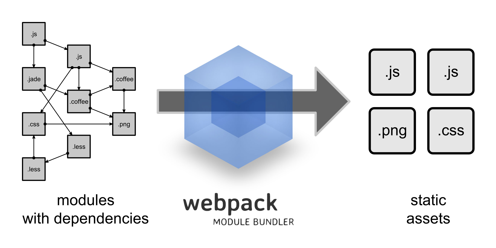

Webpack初探
很早就听说webpack包管理工具，但是一直没有机会学习，这次又看到掘金上面有关于vue+webpack的初级文章，而且最近公司没什么事儿做，决定搞一下。在搞的过程中，虽然按照文章中写的去做，但是还是有很多问题，所以写下本文，总结下我遇到的问题以及解决办法。
包管理工具—webpack
Webpack 是当下最热门的前端资源模块化管理和打包工具。它可以将许多松散的模块按照依赖和规则打包成符合生产环境部署的前端资源。还可以将按需加载的模块进行代码分隔，等到实际需要的时候再异步加载。通过 loader的转换，任何形式的资源都可以视作模块，比如 CommonJs 模块、 AMD 模块、 ES6 模块、CSS、图片、 JSON、Coffeescript、 LESS 等。
 官网：http://webpack.github.io/ 对应各种不同文件类型的资源, Webpack 有对应的模块 loader比如 CoffeeScript 用的是coffee-loader, 其他还有很多:http://webpack.github.io/docs/list-of-loaders.html
安装
webpack的安装其实其实Google一搜一大把，但是为了完整性，还是写写吧。
webpack同样基于nodejs，所以我们需要先安装nodejs，然后再利用npm安装，webpack需要nodejs v0.6以上支持，建议使用最新的nodejs。 首先全局安装webpack：
|
|
或者将webpack安装到项目依赖中:
|
|
使用
首先创建一个静态页面index.html和一个JS入口文件entry.js：
|
|
|
|
然后编译entry.js并打包到bundle.js：
|
|
然后用浏览器打开index.html就可以看到It works.
接下来添加一个模块module.js并修改入口entry.js：
|
|
重新运行打包命令后就可以看到It work from module.js.
这里我们用到了commonjs的模块写法：exports，require；前面已经说过，webpack作为打包工具，可以为commonjs，AMD，ES6模块打包。
Webpack 会分析入口文件，解析包含依赖关系的各个文件。这些文件（模块）都打包到bundle.js 。Webpack会给每个模块分配一个唯一的id并通过这个id索引和访问模块。在页面启动时，会先执行entry.js中的代码，其它模块会在运行require的时候再执行。
这就是最基本的webpack的用法，当我第一次看到这个功能的时候，终于解决了曾经我对在页面中引用JS的一个困惑，即js文件a如何引用js文件b中的东西，webpack非常方便让我们做到了这一点。下一节，会结合Vuejs进行模块化开发，那时会用到更多的webpack的东西，并且会讲到关于ES6模块儿化的一些东西，加油！